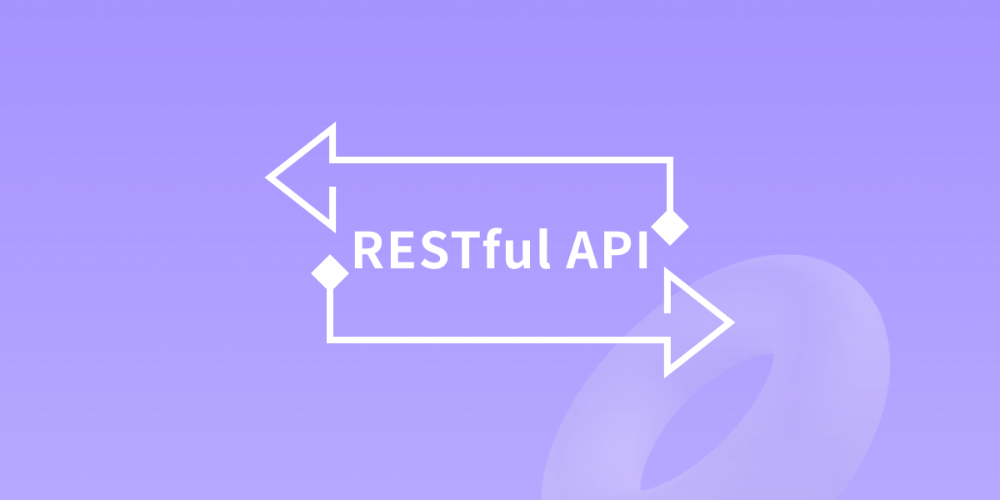
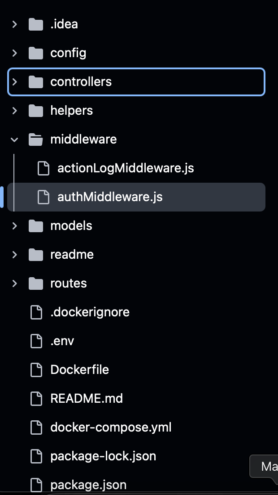

<div class="load-data">
    <div class="popup-main-content">
        <div class="container">
            <div class="row">
                <div class="col-md-12">
                    <div class="portfolio-details-title">
                        <h2>RESTful API - Önder Grup</h2>
                    </div>
                    <!-- /portfolio-details-title -->
                </div>
                <div class="col-lg-6">
                    <div class="portfolio-details-info p-0 border-0">
                        <div class="tags"><span>Client : </span> Önder Grup</div>
                        <div class="tags"><span>Category : </span> Industry</div>
                        <div class="tags"><span>Date : </span> 12.05.2023</div>
                        <div class="tags"><span>Website: : </span> https://ondergrup.com</div>
                    </div>
                    <!-- /portfolio-info -->
                </div>
                <div class="col-lg-6 mt-30 mt-lg-0">
                    <p class="portfolio-description">This project is a specialized RESTful API system developed for Önder Grup, designed to centralize and manage data communication between hydraulic systems, mobile applications, and STM32-based embedded boards. The main objective is to ensure secure and efficient data transfer across these components, enabling real-time monitoring, control, and data synchronization throughout the entire ecosystem.</p>
                    <!-- /portfolio-description -->
                    <p class="portfolio-description mt-30">Built with Node.js, MySQL, and Docker, the backend architecture provides a scalable and containerized environment for managing industrial operations. The system allows for seamless integration of sensor data from STM32 boards, mobile interactions for field technicians, and backend logic for operational decision-making, ultimately improving efficiency and traceability across the company’s processes.</p>
                    <!-- /portfolio-description -->
                </div>
                <div class="col-lg-12">
                  <div class="portfolio-details-media">
                    <div class="swiper portfolio-swiper">
                      <div class="swiper-wrapper">
                        <div class="swiper-slide">
                          
                        </div>
                        <div class="swiper-slide">
                          
                        </div>
                      </div>
                      <!-- Navigasyon düğmeleri -->
                      <div class="swiper-button-next"></div>
                      <div class="swiper-button-prev"></div>
                      <div class="swiper-pagination"></div>
                    </div>
                  </div>
                    <!-- /portfolio-details-media -->
                </div>
                <div class="col-md-12">
                    <div class="portfolio-details-nav d-flex justify-content-between">
                        <div>
                            <a class="portfolio-link" href="portfolio-details-01.html">Previous Project</a>
                        </div>
                        <div>
                            <a class="portfolio-link" href="portfolio-details-03.html">Next Project</a>
                        </div>
                    </div>
                    <!-- /portfolio-details-nav -->
                </div>
            </div>
        </div>
    </div>
</div>
